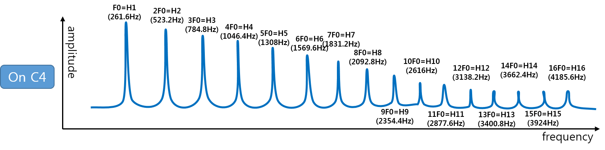
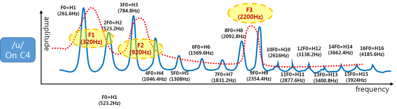
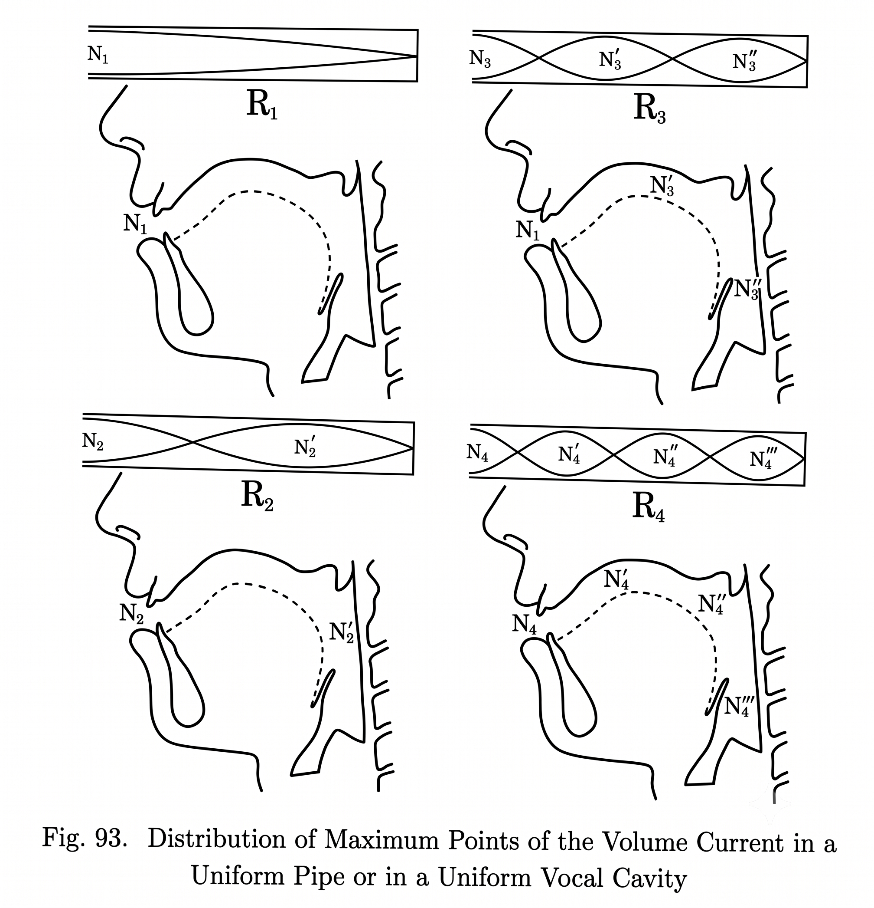
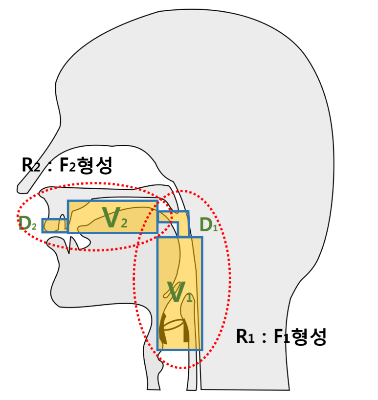
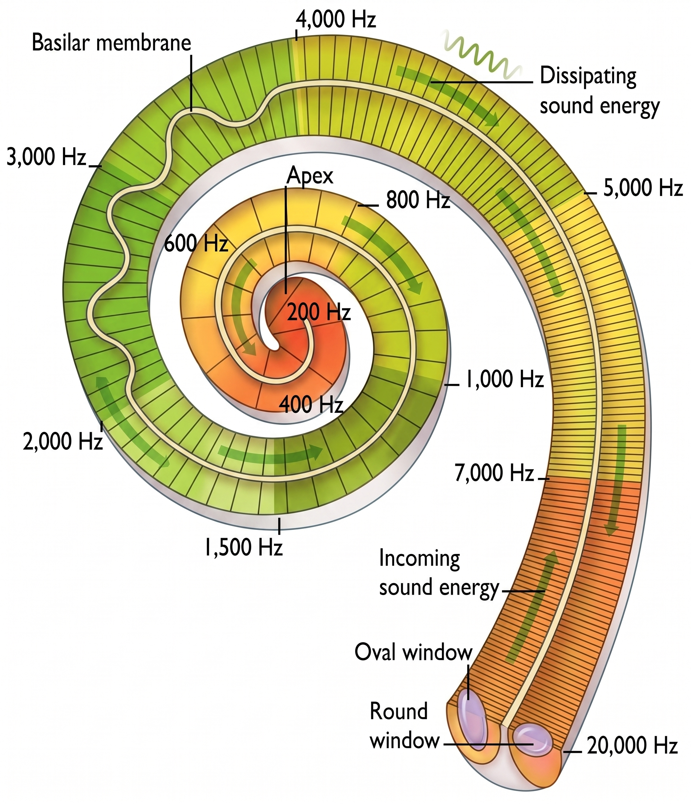

포먼트, 공명 모델, 청각 지각을 중심으로
현대 한국어에서 표기상 구별되는 일부 모음이 동일하게 발음되는 현상
| 표기 | 본래 발음 | 현재 | 예시 |
|---|---|---|---|
| ㅔ / ㅐ | [e] / [ɛ] | [e]로 합류 | 게=개, 네=내 |
| ㅞ / ㅙ / ㅚ | [we] / [wɛ] / [ø] | [we]로 수렴 | 왜=웨=외 |
| ㅒ / ㅖ | [jɛ] / [je] | [je]로 합류 | 얘기≈예의 |
음원-필터 이론과 공명 모델
성대 진동이 만드는 배음 스펙트럼

성도 공명이 특정 배음을 증폭 → 포먼트

성도를 균일 반폐쇄관으로 근사하면 공명 주파수를 예측할 수 있다

Stevens (1989): 협착이 정상파의 어느 점에 놓이느냐가 포먼트 방향을 결정
Fant (1960): 혀의 협착으로 성도가 두 관(공동)으로 분할됨

1부의 결론 — 두 포먼트가 모음을 2차원 음향 공간에 배치한다
F1-F2 좌표
가로축 F2(혀 앞뒤), 세로축 F1(혀 높이) — 왼쪽·위가 전설고모음

Eychenne & Jang (2015): 통계적으로 구별되지 않는 F1·F2 값
음향 거리가 최대인 ㅏ·ㅣ·ㅜ는 같은 기간 합류하지 않았다
달팽이관과 임계대역
기저막의 tonotopy — 위치에 따라 처리하는 주파수가 다르다

Moore & Glasberg (1983): ERB — 기저막의 주파수 분해능 상한
F1 차이를 조절하며 임계대역과의 관계를 확인한다
합류 사례 · 역사 · 반론 검토 · 결론
세 사례는 ㅔ/ㅐ 합류를 뿌리로 한 연쇄 구조
| 사례 | 유형 | 완성도 | ㅔ/ㅐ 의존 |
|---|---|---|---|
| ㅔ/ㅐ | 단모음 직접 | 최고 | 근원 |
| ㅞ/ㅙ/ㅚ | 이중모음 수렴 | 높음 | 직접 의존 |
| ㅒ/ㅖ | 파생 소실 | 높음 | 파생 의존 |
이중모음 실현형이 [we]로 수렴 — 단모음 합류가 아니라 이중모음화의 수렴
| 표기 | 본래 음가 | 현대 실현 | 변화 과정 |
|---|---|---|---|
| ㅞ | [we] | [we] | 변화 없음 (이미 [we]) |
| ㅙ | [wɛ] | [we] | 핵모음 ㅐ→ㅔ (사례 1 의존) |
| ㅚ | [ø] 단모음 | [we] | 단모음 → 이중모음화 → [we] |
사례 1의 파생 결과 — 독립적 변화 아님
15세기 이중모음 → 19세기 단모음화 → 20세기 합류
| 시기 | 음가 변화 | 음향 공간 | 합류 가능성 |
|---|---|---|---|
| 15세기 | ㅐ[aj], ㅔ[əj] | 이중모음 → F1-F2 공간 외부 | 없음 |
| 18-19세기 | ㅐ[ɛ], ㅔ[e] 단모음 | F1-F2 공간에 진입 → 인접 | 구조적 취약성 발생 |
| 20세기~현재 | ㅔ≡ㅐ 합류 진행 | 동일 좌표 | 실현 |
단모음화가 합류의 구조적 전제 조건을 만들었다
음향 공간에서 인접한데도 합류하지 않는 모음 쌍이 존재한다
음향·청각 모델이 설명하는 것과 설명하지 못하는 것
두 음소가 구별하는 단어 쌍의 비중 — 낮을수록 구별 소실의 의사소통 손실이 작다
음운 변화는 물리 법칙이 규정한 제약 안에서 일어난다
Eychenne, J. & Jang, T.-Y. (2015). On the Merger of Korean Mid Front Vowels: Phonetic and Phonological Evidence. Journal of the Korean Society of Speech Sciences, 7(2), 119–129.
Fant, G. (1960). Acoustic Theory of Speech Production. Mouton.
Stevens, K. N. (1989). On the quantal nature of speech. Journal of Phonetics, 17, 3–45.
Moore, B. C. J. & Glasberg, B. R. (1983). Suggested formulae for calculating auditory-filter bandwidths and excitation patterns. Journal of the Acoustical Society of America, 74(3), 750–753.
Bozeman, K. (2013). Practical Vocal Acoustics: Pedagogic Applications for Teachers and Singers. NATS / Rowman & Littlefield.